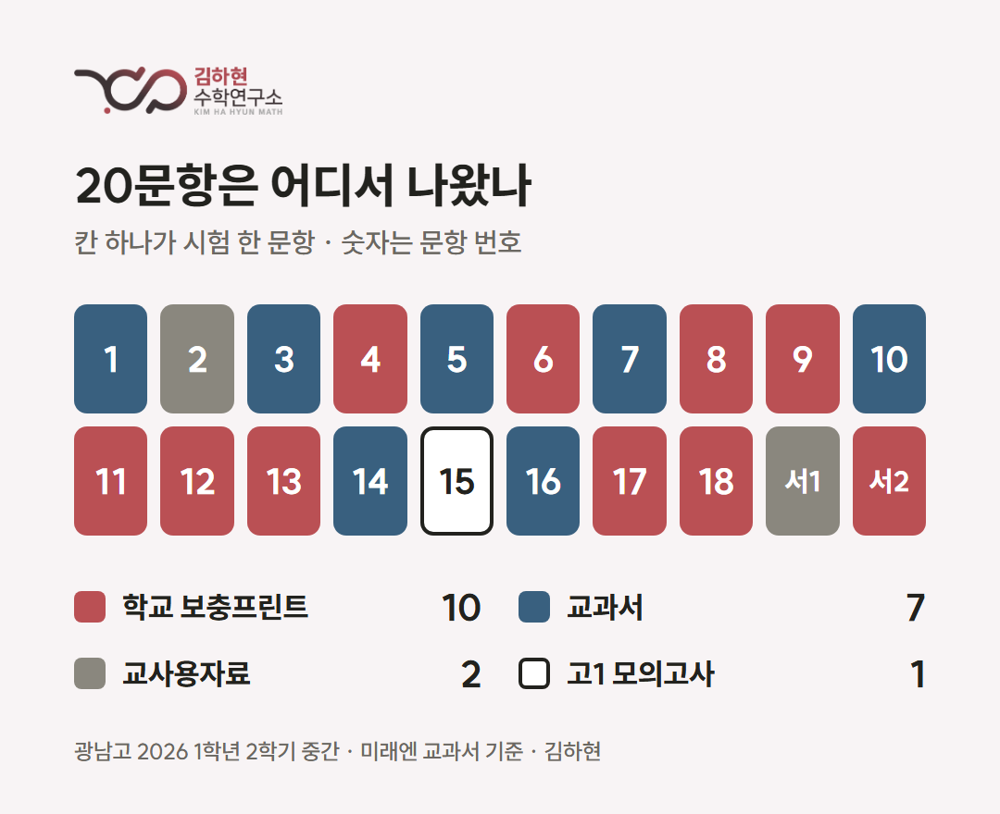
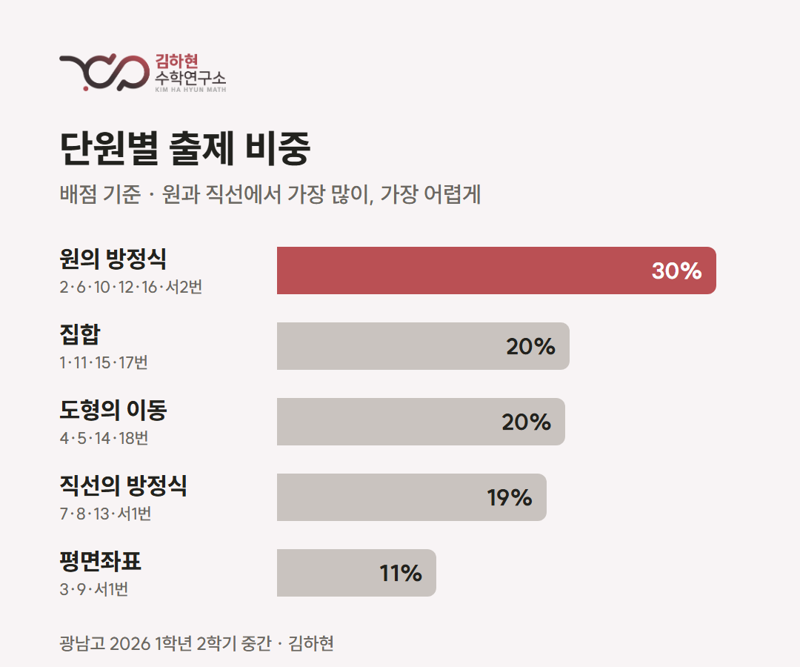
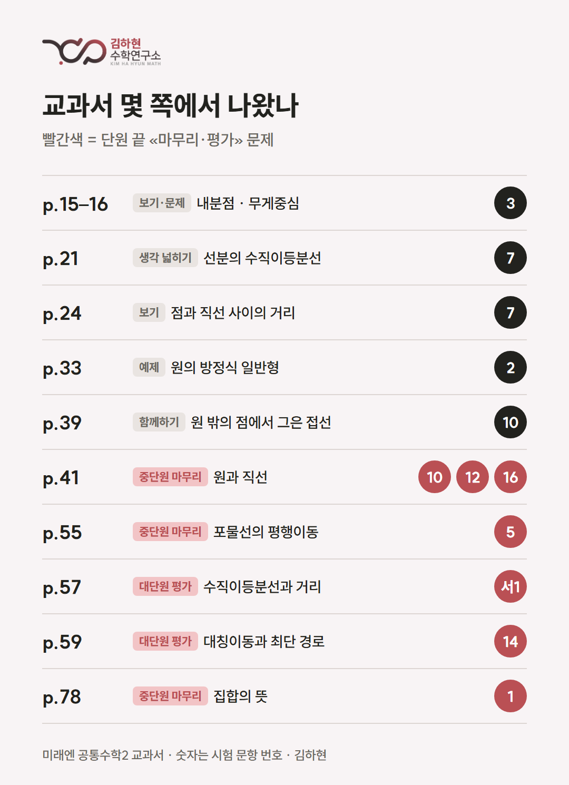

.png)
시험 분석 · 2026학년도 2학기 중간고사
광남고 1학년 수학 시험 분석
공통수학2 — 20문항 중 17문항이 프린트와 교과서에서
김하현 · 광진구 고등수학 · 2026년 11월
광남고 1학년 2학기 중간고사 수학(공통수학2) 20문항을 한 문항씩 원본 자료와 나란히 놓고 따라가 봤습니다. 시험 문제는 옮기지 않습니다. 이 글에는 각 문항이 어디에서 왔고, 원본에서 무엇이 달라졌는지만 적습니다.
- 시험 범위: 평면좌표부터 집합까지 — 교과서 Ⅰ단원 «도형의 방정식» 전부와 Ⅱ단원 «집합»
- 문항 수: 객관식 18 · 서답형 2
- 맞대어 본 자료: 미래엔 공통수학2 교과서 · 교사용 자료 · 학교 보충프린트 57문항 · 고1 학력평가
출처 — 보충프린트 10, 교과서 7, 교사용 자료 2, 학력평가 1

- 학교 보충프린트(10문항): 4 · 6 · 8 · 9 · 11 · 12 · 13 · 17 · 18번, 서답형 2
- 교과서(7문항): 1 · 3 · 5 · 7 · 10 · 14 · 16번
- 교사용 자료(2문항): 2번, 서답형 1
- 고1 학력평가(1문항): 15번 — 2021년 3월 학평
프린트 57문항 가운데 10문항이 시험에 들어왔습니다. 대부분은 숫자를 갈아 끼웠거나, 같은 상황에서 묻는 값만 바꾼 문항이었습니다.
단원 — 원의 방정식이 가장 많고 가장 어려웠다

배점으로 보면 원의 방정식이 30%쯤으로 가장 컸습니다. 집합, 도형의 이동, 직선의 방정식이 각각 20% 안팎이고 평면좌표가 11%입니다. 변별 문항인 16번과 18번도 둘 다 원과 직선 단원에서 나왔습니다.
교과서 — 예제보다 단원 끝 문제

교과서에서 온 문항은 예제보다 중단원 마무리와 대단원 평가 쪽에 몰려 있었습니다.
- 41쪽 «원과 직선» 중단원 마무리 한 쪽이 10 · 12 · 16번 세 문항으로 이어졌습니다.
- 55쪽 · 59쪽(도형의 이동), 78쪽(집합)의 마무리 · 평가 문제는 숫자만 바뀌어 나왔습니다.
- 교과서의 서술형 문제가 5지선다가 되기도 하고, 최솟값을 묻던 문제가 «최소일 때의 좌표»를 묻기도 했습니다.
원본을 바꾸는 네 가지 방식
- 숫자 교체 — 문장은 두고 좌표와 계수만 바꿈. 8 · 9 · 11번 등
- 풀이 중간값 묻기 — 조건은 같고, 최종 답 대신 풀이 도중에 나오는 값을 물음. 답을 기억하는 학생보다 풀이를 이해한 학생에게 유리합니다. 6 · 13번
- 두 문제 합치기 — 교과서 서로 다른 쪽의 개념을 한 문항에 이어 붙임. 3 · 7번, 서답형 1
- 조건 덧붙이기 — 원본에 조건을 더해 한 단계 어렵게. 10 · 12 · 16 · 18번, 서답형 2
기말고사는 이렇게 준비하세요
기말 범위는 명제, 함수, 유리함수와 무리함수입니다. 중간고사에서 본 출제 방식이 그대로 이어질 가능성이 높습니다.
- 보충프린트는 원본 반복으로 끝내지 마세요. 숫자가 바뀐 문항, 조건이 더해진 문항까지 풀어 봐야 합니다. 숫자 하나만 바뀌어도 풀이 흐름이 달라지는 문항이 있어서, 외운 풀이로는 막힙니다.
- 교과서 중단원 마무리 · 대단원 평가는 빠짐없이, 숫자를 바꿔 한 번 더. 이번 교과서 출제가 대부분 이 쪽에서 나왔습니다.
- 고1 학력평가 기출도 챙기세요. 이번 15번도 2021년 3월 학평 문항을 바꾼 것이었습니다.
- 답보다 풀이의 구조를. «선분 위»와 «직선 위», «기울기가 0이 아닌», «모든 ~에 대하여» 같은 조건 하나로 풀이가 달라지는 문항이 많았습니다. 기말의 명제 단원은 바로 이런 조건 표현이 내용 자체입니다.
- 고난도 문항은 매번 들어갑니다. 이번 16 · 18번처럼, 어려운 문제를 풀이째 외워 두는 것으로는 부족합니다. 처음 보는 문제를 어떤 관점에서 보고 어디서부터 손댈지, 그 연습이 되어 있어야 합니다.
광남고 기말, 지금 공부가 맞는지 궁금하다면
수업 학생에게는 20문항 전부를 원본과 대조한 12쪽 분석 자료와 기말 대비 방법을 드립니다. 프린트와 교과서를 어디까지 해야 할지, 고난도 문항은 어떻게 준비할지 상담해 드립니다.
수업 문의: 구주이배 수학학원 광진본원 02-456-9624